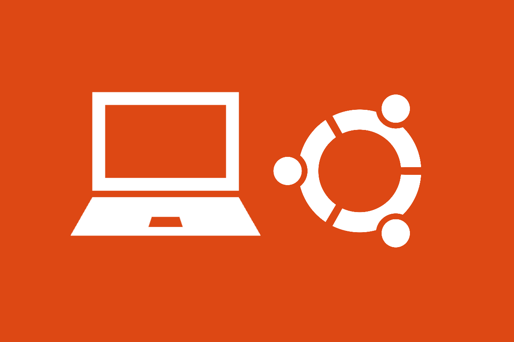
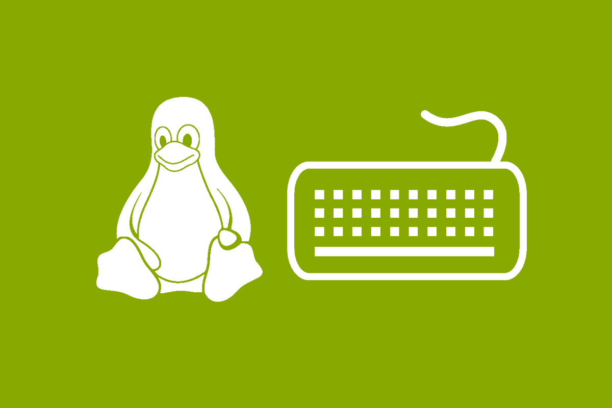

Kursus Dasar Ubuntu

Tutorial ini berisi panduan lengkap dasar-dasar Linux mulai dari instalasi Ubuntu, konfigurasi dasar Ubuntu, optimalisasi Desktop, troubleshooting Ubuntu, hingga Command Line Interface. Semua menggunakan distro Ubuntu LTS terbaru yaitu Ubuntu 16.04. Tutorial ini merupakan update dari tutorial sebelumnya yang menggunakan Ubuntu 13.04.
Mulai Kursus
Kursus Dasar Mikrotik
Tutorial ini membahas tentang teori dan praktek dasar mengenai hal apa saja yang perlu kalian kuasai jika ingin menjadi seorang Mikrotik System Administrator. Karena seorang Mikrotik admin tidak hanya harus pandai tentang praktek saja, tapi juga perlu mengetahui teori-teorinya. Video tutorial menggunakan Mikrotik Virtual.
Mulai Kursus
Kursus Dasar Linux

Tutorial ini membahas tentang teori dan praktek dasar mengenai hal apa saja yang perlu kalian kuasai jika ingin menjadi seorang Linux System Administrator. Karena seorang Linux Sysadmin tidak hanya harus pandai tentang praktek saja, tapi juga perlu mengetahui teori-teorinya. Video tutorial menggunakan distro Centos 7.
Mulai Kursus